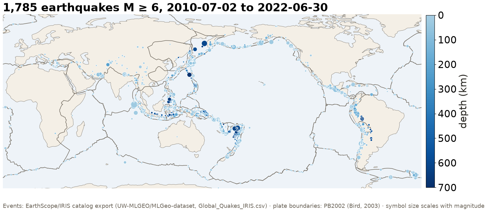
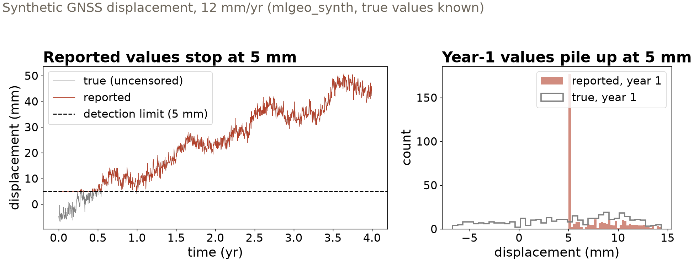

Session 5 · Fri Oct 9 · Book sections 2.3–2.4
🧮
Cleaning changes your data before any model ever sees it.
Which of your table’s oddities are damage, and which are the science?
Reading: 2.3 Pandas · 2.4 DataFrame preparation
📖 The playbook: whether missing data can be ignored depends on why they are missing — the origin of MCAR / MAR / MNAR.
Rubin, D. B. (1976). Inference and missing data. Biometrika, 63, 581–592.
✗ A spreadsheet’s excluded rows propped up a global austerity argument — reanalysis of the same table reversed the headline result.
Herndon, T., Ash, M., & Pollin, R. (2014). Does high public debt consistently stifle economic growth? A critique of Reinhart and Rogoff. Cambridge Journal of Economics, 38, 257–279.
✓ Doing it right: substituting values at the detection limit fabricates data — model the censoring instead.
Helsel, D. R. (2006). Fabricating data: How substituting values for nondetects can ruin results, and what can be done about it. Chemosphere, 65, 2434–2439.
Rows dropped from a table have moved national policy. Cleaning decisions are scientific claims.
🗂️ Catalog & compiled product 🪨 Solid Earth 📈 Seismology

Every data sample is an event; depth traces the slabs. The first summary shows depth stored in meters, so the first transform is a unit conversion.
🧪 Sample & laboratory 🪨 Solid Earth ⛰️ Geology & geomorphology
10,000 rock samples: 7 major-element oxides, density, magnetic susceptibility, lithology
985 andesites, against 5,525 granites: a 5.6 : 1 class imbalance
Synthetic whole-rock geochemistry (mlgeo_synth): the generator plants the correlations and the pathologies, so every cleaning decision is graded against known truth.
Imbalance is the norm in geoscience labels. Remember 985 when a classifier reports 90% accuracy in Chapter 3.
| Column | Zeros in the table | Verdict |
|---|---|---|
| MgO | 1,434 | real: evolved granites have fractionated their magnesium away |
| K2O | 824 | real: same logic, other rock types |
| density | 15 | impossible: no rock has zero density, so this is an instrument’s failure code |
The check: is zero inside the physically possible range of this variable?
“Replace all zeros with missing” would delete 1,432 silica-rich granites. That rewrites the geology; it does not clean it.

Synthetic (mlgeo_synth): a displacement series moving at 12 mm/yr, reported through a 5 mm floor.
12% of samples sit exactly at the 5 mm floor, yet a missing-data check reports zero problems. Censored data passes every missingness test.
| Series used for the fit | Trend (mm/yr) | Year-1 mean (mm) |
|---|---|---|
| True, uncensored | 12.44 | 4.80 |
| Reported, floor values kept | 11.59 | 7.24 |
| Reported, floor values dropped | 11.82 | 9.29 |
Both shortcuts bias in the same, predictable direction. Dropping makes the early mean worse and the trend slightly less wrong: neither recovers the truth.
Model the censoring, or report the limit in the data card. Never substitute or drop and move on.
Missing completely at random (MCAR): safe to drop. Missing because of the value (MNAR): dropping deletes your extremes.
Ask what process made the gap. If the answer involves the measurement, the missingness belongs in your data card as data.
A column can be numeric in content and non-numeric in dtype. Check dtypes after every cleaning step, not just the first.
| Pathology | Fingerprint | Geoscience example | Response |
|---|---|---|---|
| Sentinel value | heap at an impossible value | density = 0 g/cm³ | replace only the impossible ones |
| Censored value | heap at a plausible round value | laboratory detection limit | model it, or report the limit |
| Informative gap | gaps track events | gauge drowned in the flood | treat the gap as data |
| Dtype drift | numeric content, non-numeric dtype | density after cleaning | check dtypes every step |
Same discipline throughout: diagnose the mechanism first, clean second, write the decision down.
Ask an assistant to “clean this table” and the likely result is the global sweep: zeros to missing, then drop incomplete samples.
| A rule that cannot be checked | A rule that can |
|---|---|
| Clean the data carefully | Replace a value only if it lies outside the physical range stated in data/README.md |
| Handle missing values | Log every replacement or drop (column, rule, count) to cleaning_log.csv |
| Fix the types | Report df.dtypes before and after each cleaning step |
A cleaning decision you have not written down is one your agent will make for you.
pixi run jupyter lab → 2.4_dataframes_prep.ipynbMonday: sampling, resampling, and irregular data (2.5–2.6) · HW1 due Mon Oct 12
ESS 469/569 · Machine Learning in the Geosciences · Autumn 2026